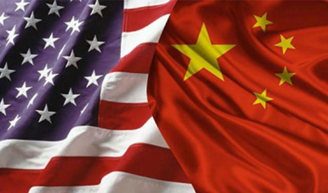

由于两国评价标准不同，将绝对浓度值转化为空气质量指数(AQI)时存在差异；美国用35微克/立方米的日均值来评价，而中国是用75微克/立方米的日均值来评价。北京市环境保护监测中心主任张大伟这意味着如果PM2.5平均浓度是68微克/立方米，中国标准评价为“二级良”，而美国标准则是“四级中度污染”。
为何中美标准存在差异？张大伟坦言“美国如今的标准比中国严格”，但他强调，空气污染的治理和标准制定是循序渐进的过程，由于社会发展水平不同，世界各国的标准并不一致。中国如今执行的“75微克/立方米的日均值”标准，是参照世界卫生组织给发展中国家制定的第一阶段指导值，得到了世界科学界的认可。美国在1997年设定的PM2.5标准是日均65微克/立方米，经过治理和社会发展，2006年将其降为35微克/立方米。
详情请戳：http://www.sangebaba.com/


点击二维码关注三个爸爸公众号